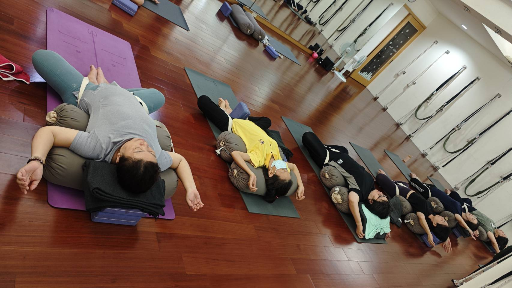

第一次做 AI 體態檢測會發生什麼事？現場流程、穿著準備與老師當面解讀全攻略

- 全程 20 分鐘精緻私密：包含到店生活問診、多平面 2D 幾何骨骼力線拍攝、角度運算，以及老師一對一當面深度解讀。
- 穿著準備關鍵：選擇貼身運動褲與短袖／背心，束起長髮，確保耳垂、肩峰、C7 頸椎、骨盆 ASIS 與腳踝等骨骼地標無遮蔽。
- AI 標記與老師解讀的黃金結合：演算法負責客觀描繪角度數字，老師負責將數字轉譯為人體「動力鏈代償真相」，找出肩頸腰背痠痛的源頭。
- 零推銷與非醫療界線：檢測屬於功能性姿勢篩檢，非醫院輻射 X 光診斷；檢測後自由決定是否上課，絕無推銷壓力。
在網路上看到「AI 體態檢測」只要首次體驗價 NT$299，心裡躍躍欲試，卻難免浮現許多未知與擔憂：現場到底會發生什麼事？會不會像去醫院健檢一樣被各種儀器拘束、甚至要求換穿尷尬的檢查袍？會不會因為自己身材不好或筋骨僵硬而感到無地自容？檢測完會不會被老師關在房間裡強力推銷？為了讓每一位初次探訪的朋友心裡踏實，這篇將為您全透明公開到店 20 分鐘的完整流程與細節。
第一步：溫馨接待與生活脈絡梳理（約 3–5 分鐘）
抵達位於高雄市左營區新庄仔路 726 號 3 樓的鑫彥瑜珈後，映入眼簾的是溫暖明亮的木質調空間，空氣中飄散著放鬆的精油香氣，絕非冷冰冰的醫院診間。在獨立的接待區中，老師會先為您倒杯常溫水，透過簡短的生活問詢，了解您的日常身體感受：
- 工作型態是長時間伏案打字、久站、還是需要單側負重？
- 平常最容易發作痠痛的部位（如下午四點後後頸緊繃、晨起下背發僵）？
- 過去是否有舊傷、脊椎病史或特別困擾的體態困擾（如富貴包、骨盆前傾、高低肩）？
這個前置步驟至關重要。因為體態照片捕捉的是「靜態瞬間」，但唯有結合您長年累積的生活慣性，後續的數據解讀才具備真正的生命溫度與精準度。
第二步：多平面 2D 幾何力線拍攝（約 3–5 分鐘）
在專屬的檢測背景板前，老師會引導您站在標準參考十字線上。此時您不需要刻意「立正挺胸」或「用力縮小腹」——最關鍵的原則是「以平常最習慣、最放鬆的自然狀態站立」。因為我們需要觀察的是大腦在潛意識下的預設肌力代償，而非刻意擺拍出的短暫假象。
拍攝涵蓋多個解剖平面：
- 正冠狀面（Front View）：檢視左右耳垂高低、雙肩峰水平連線、胸廓兩側臂身間隙對稱度、骨盆髂前上棘（ASIS）水平線，以及髕骨與足弓力線。
- 矢狀面側視（Side View）：檢視自外踝前緣向上延伸的重力垂線（Plumb Line），是否能依序穿過膝關節前部、股骨大轉子、肩峰，並精準落於耳垂。量測耳垂相對於肩峰的前探距離（頭前傾角度），以及胸椎後凸與骨盆前後傾角度。
- 背冠狀面（Back View）：觀察肩胛骨內側緣是否翹起（翼狀肩胛）、下角水平位置，以及脊柱棘突中線是否出現微幅側彎偏轉。

第三步：核心環節——老師一對一當面專業解讀（約 10–12 分鐘）
拍攝完成後，AI 系統會在幾秒鐘內於平板影像上精準繪出骨骼幾何線與夾角角度。許多人以為檢測到這裡就結束了，但事實上，真正的核心價值才剛剛開始：
老師會坐在您身旁，拿著平板將畫面放大，帶著您親眼看見自己「平常看不見的背面與側面角度」：
- 看懂角度背後的連鎖因果：例如畫面顯示頭前傾 12 度，老師不會單純叫您收下巴，而是會指出：「您看，因為您的骨盆處於前傾 18 度，為了維持重心不往前撲倒，您的胸椎被迫向後彎曲塌陷，這才逼迫頸椎必須向前探出以平衡視線。您的肩頸緊繃，源頭其實在骨盆與腰大肌的失衡。」
- 現場動態微調印證：老師會用手輕輕引導您的骨盆微幅後收、肩胛下壓，讓您現場親身體會：「原來這才是我身體真正該在的中立位置！原來放鬆不用靠死命挺胸。」
- 客觀解惑與安全把關：您可以隨時提出心中的疑問，老師會據實告知哪些部分屬於肌肉張力失衡（可透過壁繩調整）、哪些屬於骨骼自然變異，以及哪些徵兆需要優先至醫療院所排查。
第四步：透明建議與零壓力告別
解讀完成後，老師會為您總結 2 至 3 個日常最需要注意的人體工學建議（例如辦公室螢幕高度調整、睡覺枕頭高度指引），並將分析報告與角度圖檔完整傳送給您存檔。
鑫彥瑜珈的堅定承諾：檢測結束後，絕不會有任何強行推銷、催促刷卡或情緒勒索的銷售行為。要不要預約後續的壁繩瑜珈體驗、要選擇團課還是一對一私人調整，完全由您回家後依自己的預算與生活步調深思熟慮決定。
用 20 分鐘，換一次對自己身體的徹底明白
與其每天對著鏡子猜測自己有沒有駝背、骨盆有沒有歪，不如讓客觀的 AI 幾何數據與專業老師的當面解讀，為您梳理清楚身體的真實樣貌。首次體驗只要 NT$299（原價 NT$699，約 20 分鐘）。
預約首次 NT$299 AI 體態檢測（含老師一對一當面解讀）功能性篩查與醫療影像診斷之界線（Red Flags）
專業邊界嚴肅說明：鑫彥瑜珈之 AI 體態檢測屬於「運動功能性肌肉骨骼力線篩檢」，並非醫療行為，亦無法取代醫院影像學診斷：
1. 非 X 光輻射診斷：本檢測無法測量脊椎側彎的臨床柯氏角（Cobb's Angle），亦無法診斷椎間盤突出程度、骨刺骨贅生成或骨質疏鬆 DXA 數值。
2. 嚴重結構性紅旗警訊：若學員在檢測外觀上出現嚴重的角狀駝背（Gibbus Deformity，常見於骨質疏鬆壓迫性骨折或脊椎結核）、青少年在數月內側彎角度肉眼可見劇烈惡化、或是伴隨下肢神經放射麻木、垂足與排尿障礙，老師會恪守專業倫理，第一時間建議學員中止運動預約，並開立指引轉介至大型醫院骨科或神經外科進行臨床 X 光與 MRI 掃描。
常見問題
第一次做 AI 體態檢測，當天穿什麼衣服最合適？
建議穿著貼身但不緊繃的運動服飾（如瑜珈褲、合身短袖或背心），避免過於寬鬆的帽 T、厚毛衣或硬質牛仔褲，以免衣物皺褶遮蔽了肩峰、第七頸椎（C7）、髂前上棘（ASIS）與外踝等關鍵骨骼標記點。長髮學員建議自備髮圈將頭髮盤起，以利清晰露出耳垂與頸椎側邊力線。
檢測過程會有任何侵入性、疼痛或劇烈動作嗎？
完全沒有。檢測過程純粹為非侵入性的多角度靜態立體拍攝與基礎活動度觀察。你只需要以平常最自然的站姿站立，放鬆呼吸即可。過程中不會有任何儀器擠壓身體，也不會強迫你做任何疼痛或極限拉筋動作，全程安全、溫和且具備隱私保護。
是 AI 系統自動跑出報告，還是有專業老師當面說明？
AI 軟體負責在影像上精確描繪 2D 骨骼幾何線與量測關節偏轉角度，但『真正具備價值的是老師的一對一當面解讀』。資深老師會拿著平板，結合你的日常工作型態、痠痛感受與動作觀察，親自為你拆解各個數字背後的動力鏈連鎖代償，並現場回答你的所有疑慮，絕非機器自動印出一張冷冰冰的數據了事。
完全沒有瑜珈基礎、身體非常僵硬的人，可以做檢測嗎？
非常適合，這正是檢測的核心目的。檢測不是對身體打分數的考試，而是客觀看清目前身體的代償模式。身體越是僵硬、平常越是不常運動的人，越能在檢測中看清哪裡的關節缺乏滑動、哪裡的肌肉在過度代償，提早為安全運動規劃防護邊界。
檢測結束後，現場會不會面臨強迫推銷或必須立刻報名？
絕對不會。鑫彥瑜珈堅持透明、自在的教學文化。檢測結束後，你會獲得完整的姿勢角度分析圖檔與老師具體的日常調整建議。是否接著預約課程完全取決於您個人的意願與生活安排，現場不會有任何強迫推銷壓力。